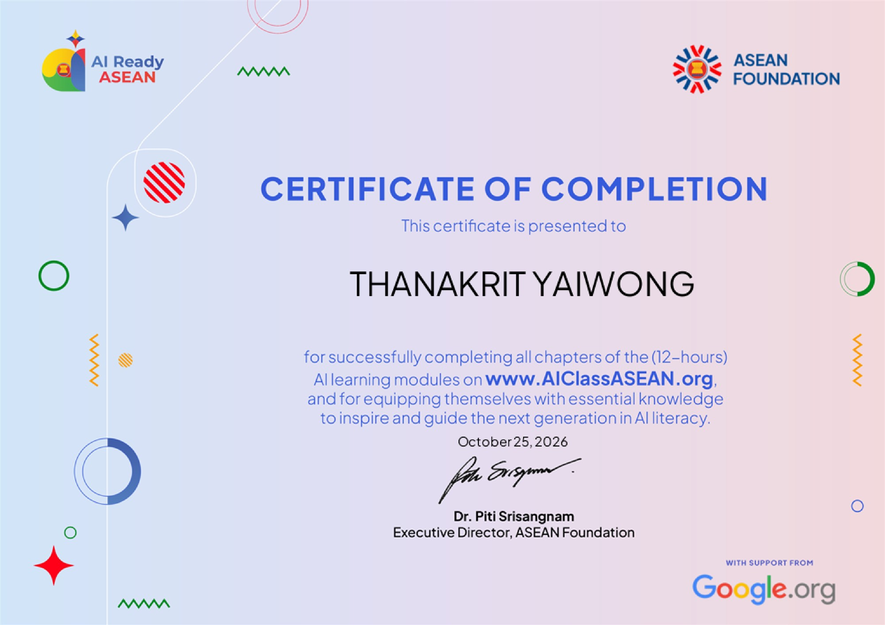
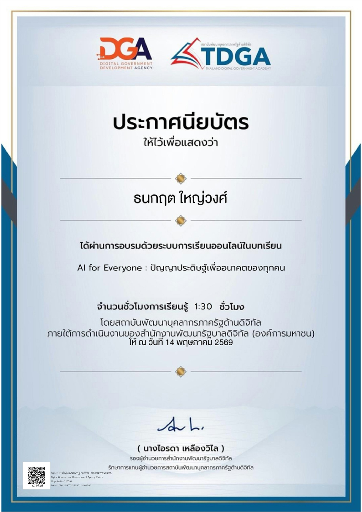

UIPATH / RPA / EXCEL
จาก PDF สู่ Excel ด้วย UiPath
คลิปสาธิต 33 วินาที แสดงลำดับงานที่อ่านข้อความจาก PDF ค้นหาข้อมูลตามรูปแบบ แล้ววนเขียนค่าที่พบลงในเซลล์ Excel
เปิดไฟล์วิดีโอ ↗
สวัสดีครับ ผมโฟล์ค ผมสนใจว่าการกดเพียงครั้งเดียวจะทำให้หน้าเว็บตอบกลับเราได้อย่างไร ในโปรเจกต์ Mypuppy ผมลองใช้แป้นตัวเลข เพลง และภาพเคลื่อนไหว เปลี่ยนคำอวยพรวันเกิดให้เป็นของขวัญที่คนรับเปิดได้ด้วยตัวเอง
จนท.บก.ยก.ศคปอ2 ศปอ.คปอ.
กองบัญชาการควบคุมการปฏิบัติทางอากาศ (AOCC)
IN PROGRESS
Sripatum University
–
GPA 3.88

AI Ready ASEANASEAN Foundation Digital Marketingตลาดหลักทรัพย์แห่งประเทศไทย (SET)
Digital Marketingตลาดหลักทรัพย์แห่งประเทศไทย (SET) หลักการลงทุนตลาดหลักทรัพย์แห่งประเทศไทย (SET)
หลักการลงทุนตลาดหลักทรัพย์แห่งประเทศไทย (SET)
AI for Everyone · ปัญญาประดิษฐ์เพื่ออนาคตของทุกคนTDGA / DGAIT FUNDAMENTALS
ฝึกอ่านค่า CPU และหน่วยความจำใน Task Manager เมื่อเครื่องช้า และไล่ตรวจสายหรือแหล่งสัญญาณเมื่อหน้าจอไม่แสดงภาพ
เมื่อ Wi-Fi ต่อได้แต่เปิดเว็บไม่ได้ ลองเทียบอีกเครื่องในเครือข่ายเดียวกัน แล้วทดสอบหลายเว็บไซต์เพื่อแยกว่าอาการอยู่ที่เครื่อง เว็บไซต์ หรือเครือข่าย
ใช้ HTML จัดเนื้อหา CSS ทำเลย์เอาต์และแอนิเมชัน และ JavaScript รับการกดปุ่มหรือวาดภาพผ่าน Canvas
เชื่อมข้อมูลระหว่างโปรแกรม เช่น ดึงสถานะคำสั่งซื้อจากระบบร้านค้ามาแสดงในแดชบอร์ด
ให้ซอฟต์แวร์ทำงานซ้ำตามขั้นตอนบนหน้าจอ เช่น นำข้อมูลจากตารางไปกรอกในแบบฟอร์มทีละรายการ
UIPATH / RPA / EXCEL
คลิปสาธิต 33 วินาที แสดงลำดับงานที่อ่านข้อความจาก PDF ค้นหาข้อมูลตามรูปแบบ แล้ววนเขียนค่าที่พบลงในเซลล์ Excel
เปิดไฟล์วิดีโอ ↗HTML / CSS / JAVASCRIPT
เว็บของขวัญวันเกิดที่เริ่มจากการกดรหัสหกหลัก ก่อนเปิดไปเจอภาพ เพลง และท้องฟ้าที่วาดด้วย Canvas
แต่ละครั้งที่กดตัวเลข JavaScript จะเติมจุดให้เท่ากับจำนวนตัวเลขที่ใส่ เมื่อกดลบ จุดสุดท้ายจะกลับเป็นวงว่าง ผู้ใช้จึงเห็นทันทีว่าเหลืออีกกี่หลัก